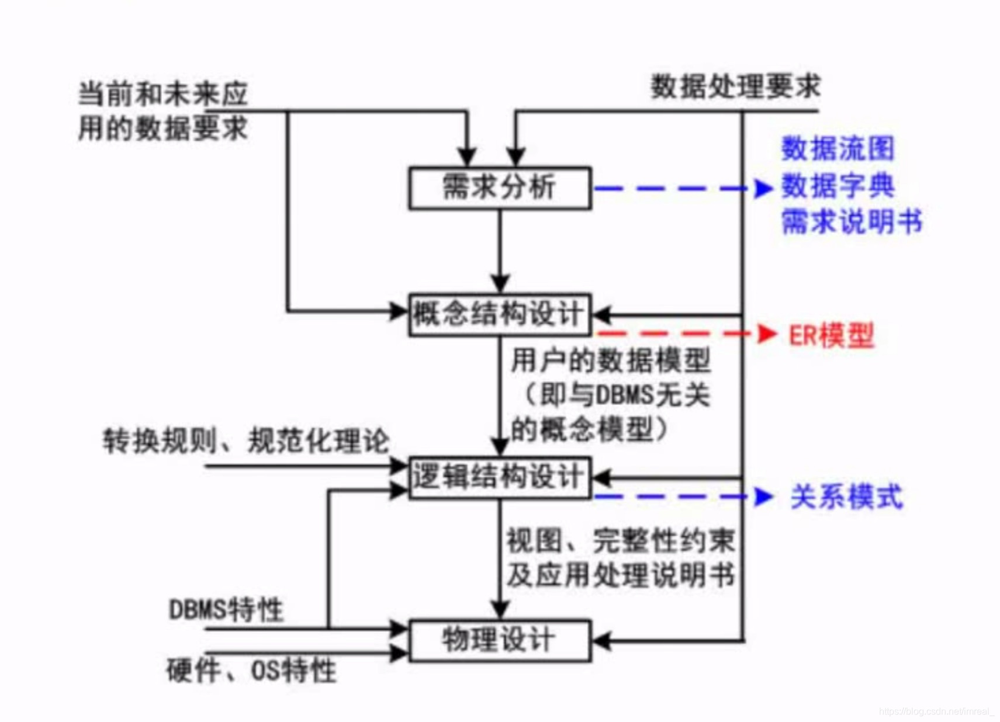

「软件设计师」数据库系统
三级模式—两级映射
- 三级模式
- 内模式(物理数据库模式)；它是和物理层次数据库直接关联的，负责管理存储数据的方式，即数据应以什么格式存放在物理文件上面，以及如何优化这些存储方式；该模式的关注点在于数据如何存放上面
- 概念模式：即数据库中的“表”，在该模式中，根据业务以及应用，数据被分成了若干张“表”，表之间会有相应的关联
- 外模式：处于用户的应用层次，即数据库中的“视图”，使用户在对数据的控制上有了更多的手段，有了更为灵活的处置方式
- 两级映射
- 外模式—概念模式映射：外模式和概念模式具有映射关系，该关系即“视图”和“表”之间的映射关系
- 概念模式—内模式映射：即用户想要改变存储结构，我们只需要调整这种映射关系，而不需要去修改用户的应用程序
- 关系图示
数据库设计过程
- 数据流图，数据字典以及需求说明书都是需求分析阶段的产物
- ER模型为概念结构设计层次的产物
- 关系模式为逻辑结构设计层次的产物

ER模型
-
在ER模型中，矩形表示实体(如学生,课程)，椭圆表示属性(如学号，姓名，性别，年龄)，菱形表示联系(如选课)；其中学生和课程之间具有多对多关系
-
ER模型由局部到全局的合成方式
- 逐步集成即首先将两个局部图集成在一起，然后与第三个合并在一起……;
- 一次集成即将所有ER图一次集成
集成产生的冲突，即局部ER模型在继承时的冲突，如属性冲突、命名冲突(如一名多意)、结构冲突(不同抽象级别的冲突)
- ER模型转换为关系模型
- 一个实体型转换为一个关系模式
- 1:1联系：即一一对应的关系中，一个实体型转换为一个关系模式，再把这种联系放在任意一个其他实体中，因此在此种转换中需要两个实体的参与
- 1:n联系：即一对多的关系中，如部门实体与和员工实体之间，仍然是一个实体型转换为一个关系模型，但这种联系只能记录在多这边，如员工
- m:n联系：即多对多的关系中，此种关系至少需要三个实体参与
关系代数
-
差运算（-）：得到A集合中B所没有的元素，如A-B即得到B在A中所没有的元素
-
笛卡尔积（×）：若AXB，则将A第一行记录写下，然后将其重复记录三次，然后将B的三行记录与A重写的记录一一对应的写下，然后对A的第二行记录进行同样的重写，以及将B对应的记录重写……
例：求S1和S2的笛卡尔积
-
投影（π）：将所选的“列”记录下来
-
选择（σ）：将所选的“行”记录下来
-
自然联接（∞）：自然连接的结果以左侧关系为主，右侧关系去除重复列，如R(A,B,C,D,E)和E(C,D,E,F)进行自然连接的结果为：(A,B,R.C,R.D,R.E,F)
规范化理论
函数依赖
- 函数依赖：即函数关系，如学号对应姓名，姓名可以重复，但学号是唯一的，且唯一的学号对应相应了可重复的姓名
- 部分函数依赖(部分依赖)：主键是两个属性的组合键，若主键中的一部分可以确定某个属性，则为部分函数依赖
- 传递函数依赖(传递依赖)：若A可以确定B，B可以确定C，则A可以确定C(注意:B不能确定A，因为此时二者即为等价)
价值与用途
- 在非规范化的关系模式中，可能存在的问题包括：数据冗余、更新异常、插入异常、删除异常
- 价值包括：解决数据冗余，如在记录大学生所属系别时，记录为计算机系就比计算机科学系更为简便，在大量数据的处理中，这一点的改进极为重要
键
- 数据库系统中的键包括：超键，候选键，主键，外键
- 元组：在关系中，记录称为元组。元组对应表中的一行；表示一个实体
- 键：属性的集合
- 超键：唯一能够标识元组(实体，即数据库的一行)的键，可以是单个的属性，也可以是属性的组合
- 候选键：是一种特殊的超键，它是在超键的基础上消除多余属性后的键，可以有多个
- 求解候选键步骤
- 将关系模式的函数依赖关系用“有向图”的方式表示
- 找入度为0的属性，并以该属性集合为起点，尝试遍历有向图，若能遍历图中所有结点，则该属性集即为关系模式的候选键
- 入度即为第一个只有指向箭头，没有被指箭头的属性
- 若入度为0的属性集不能遍历图中所有结点(或没有入度为0的属性)，则需要尝试性的将一些中间结点(既有入度，也有出度的结点)并入入度为0的属性集中，直至该集合能遍历所有结点，该集合即为候选键
- 求解候选键步骤
- 主键：只能有一个，如学号和身份证号都能标识一个学生，而主键则是在两个属性集合之中则其一
- 外键：外键是其他关系的主键，因为许多时候我们需要对表做关联
范式
- 概念：范式符号为NF；范式分为一级范式。二级范式，三级范式…….；随着范式等级的提高，规范程度就会越高，数据表的拆分也将越来越细，而数据表拆分过细会造成性能方面的问题，因此，我们通常对范式的等级采取折中的方式，即做到三级范式
- 第一范式：在关系模式R中，当且仅当所有域(列的取值范围，如性别的取值范围就是男和女)列的取值范围只包含原子值，即每个分量都是不可再分的数据项，则称R是第一范式
- 第二范式：当且仅当R是1NF，且每一个非主属性完全依赖(主键中的所有属性共同作用才能决定该属性)主键(且不存在部分依赖)时，则称R是第二范式
- 第三范式：当且仅当R是2NF，且E中没有非主属性传递依赖于码时，则称R是第三范式
- BC范式：设R是一个关系模式，F是它的依赖集，R属于BCNF当且仅当其F中每一个依赖的决定因素必定包含R的某个候选码

-
主属性：主属性即为构成候选键的属性，在以下关系图中，ST和SJ都是候选键，因此，S,J,T三个属性都属于主属性

-
关系模式：关系模式实际上就是记录类型。它的定义包括：模式名、属性名、值域名以及模式的主键。关系模式不涉及到物理存储方面的描述，仅仅是对数据特性的描述
模式分解
- 范式级别不够时我们采取模式的拆分
- 模式拆分时要保持的原则
- 保持函数依赖分解(不需要保持冗余的函数依赖)
- 无损分解：有损即不能还原；无损即可以还原
无损联接分解：指将一个关系模式分解成若干个关系模式后，通过自然联接和投影等运算仍能还原到原来的模式
- 判断是否满足无损分解的方法
- 表格法：当有任意一行全为a时，该关系模式的分解即为无损分解
2.计算法：第一个p1是无损分解，第二个p2是有损分解

- 表格法：当有任意一行全为a时，该关系模式的分解即为无损分解
数据库的并发控制
-
事务
- 概念：把多个操作封装起来，将其看成一个整体来进行操作，可以便于并行并发的处理一些事情
- 特性
- 原子性：即事务的内容操作要么全部做，要么全不做
- 一致性：在事务执行之前，数据保持一致的状态，执行之后数据也是一致的状态
- 隔离性：事务之间的执行是独立进行的
- 持续性：事务执行之后，其结果造成的影响是持续的，即使数据库崩溃，其对数据库的更新操作也永久有效
-
并发并行带来的问题
-
丢失更新

在这两个事务中，T1执行的结果为5，T2执行的结果为2，我们想要得到的是A减去5再减去8的结果，但最终结果为2，因为下一个执行的事务结果会覆盖上一个事务执行的结果
-
不可重复读

在T1运算中，求A与B的和时，为了提高准确率，程序会再次进行验算，但在第一次运算和第二次运算的间隙，将进行T2运算，T2运算的结果会将A与B的值进行覆盖，这将会产生死锁问题
-
读“脏”数据：脏数据不是真正的数据，不是我们执行过程中真的产生的数据，只是一个临时值
值70是计算过程产生的数据，属于临时数据，该数据被恢复为了20，使得T2操作将会出错
-
-
解决并发并行带来的问题的方法——封锁协议
- 一级封锁协议：事务T在修改数据R之前必须先对其加X(写锁或排他锁)锁，直到事务结束才释放。可防止丢失修改，该锁可以使得除了T以外的所有事务将不能访问R，而事务T则可以阅读或者修改R
- 二级封锁协议：一级封锁协议加上事务T在读取数据R之前先对其加S(读锁或共享锁)锁，读完后即可释放S锁。可防止丢失修改，还可防止读“脏”数据，该锁的作用是所有的事务都可以访问R，但包括T在内的所有事务都不能修改R
- 三级封锁协议：一级封锁协议加上事务T在读取数据R之前先对其加S锁，直到事务结束才释放。可防止丢失修改，防止读“脏”数据与防止数据重复读
- 两段锁协议：可串行化(通过加锁解锁两个阶段使并发事务排队进行)的。可能发生死锁
- 如果事物T对数据加上X锁后，就只允许事务T读取和修改数据，其他事务对数据A不能再加任何锁，从而也不能读取和修改数据，直到事务T释放数据上的锁
- 如果事务T对数据加上了S锁后，事务T就只能读数据但不可以修改，其他事务可以再对数据A加S锁来读取，只要数据上有S锁，任何事务都只能再对其加S锁，而不能加X锁
数据库完整性约束
- 约束的作用是提高数据的可靠性
- 实体完整性约束：给数据表定义主键
- 参照完整性约束：外键中的约束，如：我们设置了一个员工表，其中含有部门号，若部门号设置了参照完整性约束，则在设置部门号时，其内容必须是主键中的内容，若不是，则会报错
- 用户自定义完整性约束：用户可以设置属性的值的要求，如属性“年龄”：用户可以自行设置“不能输入负数”限定
- 触发器：写脚本来约束数据库，用来设置更为复杂的约束
数据库安全
数据库备份与恢复
- 按备份方式分类
- 冷备份（静态备份）：将数据库正常关闭，在停止状态下，将数据库的文件全部备份(复制)下来
- 优点：非常快速的备份方法(只需要复制文件)；容易归档(简单复制即可)；容易恢复到某个时间点上(只需将文件再复制回去)；能与归档方法结合，做数据库“最佳状态”的恢复；低度维护，高度安全
- 缺点：单独使用时，只能提供到某一时间点上的恢复；在实施备份的全过程中，数据库必须要作备份而不能做其他工作；若磁盘空间有限，只能复制到磁带等其他外部存储设备上，速度会很慢；不能按表或按用户恢复
- 热备份（动态备份）：利用备份软件，在数据库正常运行的状态下，将数据库中的数据文件备份出来
- 优点：可在表空间或数据库文件级备份，备份的时间短；备份时数据库仍然可以使用；可达到秒级恢复(恢复到某一时间节点上)；可对几乎所有数据库实体做恢复；恢复是快速的
- 缺点：不能出错，否则后果严重；若热备份不成功所得结果不可用于时间点的恢复；因难于维护，所以要特别小心，不允许“以失败告终”
- 冷备份（静态备份）：将数据库正常关闭，在停止状态下，将数据库的文件全部备份(复制)下来
- 按备份的量分类
- 完全备份：备份整个数据库的内容
- 差量备份：仅备份上一次完全备份之后变化的数据(可以解决增量备份可能出现的错误)
- 增量备份：备份上一次备份之后变化的数据
- 四种转储方式
- 静态海量转储：在系统中无事务运行时进行，每次转储全部数据库
- 静态增量转储：在系统无运行事务时进行，每次只转储上一次转储后更新过的数据
- 动态海量转储：转储期间允许对数据库进行存取或修改，每次转储全部数据库
- 动态增量转储：转储期间允许对数据库进行存取或修改，每次只转储上一次转储后更新的内容
- 日志文件：事务日志是针对数据库改变所做的记录，它可以针对数据库的任何操作(如插入，更新)，并将记录结果保存在独立的文件中
- 数据库可能的故障与解决办法
数据仓库与数据挖掘
- 数据仓库：数据仓库是一种特殊的数据库；数据库系统在刚刚建立时运行速度很快，但随着时间的推移，其存储的数据量越来越大，速度也将逐步下降，而为了提高速度，人们会优化存储，通常采用删除较久远历史数据来进行优化，而这些数据仍然具有部分价值，因此我们会专门用一个数据库来对其进行存放，而用来存放这种数据的数据库并不需要插入，添加，修改等操作，更多的操作是查询，因此我们将这种特殊用途的数据库称之为数据仓库
- 数据仓库的特点
- 面向主题：不同与一般数据库的面向业务，数据仓库的数据是面向主题的
- 集成性：数据仓库会存储诸如月报表，周报表等集成式的数据，而普通数据库并不会这么干
- 相对稳定性：进去的数据将不会进行修改，删除等操作
- 反映历史变化(随着时间变化)：隔一段时间会将数据导入进来
- 数据仓库的建立过程：首先是从数据源中抽取，清理(使数据格式一致)，装载(放到数据仓库中)，刷新(定期向仓库中添加数据)；数据集市即部门级的数据仓库，因为数据仓库的建立从企业全局的战略上讲具有非常大的风险，因此只建立部分数据库最后再将其整合则会降低风险，而其中部门级的数据库则称为数据集市
- OLAP服务器（联机分析处理服务器）：专门做分析处理工作的，最表层是数据的前端工具，前端工具最普通的如查询工具，报表工具，分析工具以及比较独特的数据挖掘工具
- 数据挖掘方法分类
- 关联分析：挖掘出隐藏在数据间的相互关系
- 序列模式分析：侧重点是分析数据间的前后关系(因果关系)
- 分类分析：为每一个记录赋予一个标记再按标记分类
- 聚类分析：分类分析法的逆过程
- 数据挖掘方法：决策树、神经网络、关联规则挖掘算法
反规范化
- 反规范化的提出：数据库规范化程度不高会有过多的数据冗余，插入异常，删除异常但规范化程度过高会造成数据表过多，查询时的效率会极大的降低，因此提出了反规范化
- 反规范化的技术
- 增加派生性冗余：增加冗余
- 增加冗余列
- 重新组表
- 分割表：包括垂直分割和水平分割
分布式数据库相关概念
- 分片透明：是指用户不必知道数据是如何分片的，它们对数据的操作在全局关系上进行，即关系如何分片对用户是透明的，因此当分片改变时，应用程序可以不变。分片透明性是最高层次的透明性，如果用户能在全局关系一级操作，则数据如何分布，如何存储等细节不必关心，其应用程序的编写与集中式数据库相同
- 复制透明：用户不用关心数据库在网络中各个结点的复制情况，被复制的数据的更新都由系统自动完成。在分布式数据库系统中，可以把一个场地的数据复制到其他场地存放，应用程序可以使用复制到本地的数据在本地完成分布式操作，避免通过网络传输数据，提高了系统的运行和查询效率，但是对于复制数据的更新操作，就要涉及到对所有复制数据的更新
- 位置透明：是指用户不必知道所操作的数据放在何处，即数据分配到哪个或哪些站点存储对用户是透明的
- 逻辑透明：是最低层次的透明性，该透明性提供数据到局部数据库的映像，即用户不必关心局部DBMS支持哪种数据模型、使用哪种数据操纵语言，数据模型和操纵语言的转换是由系统完成的。因此，逻辑透明对异构型和同构异构的分布式数据库是非常重要的
- wechat
- alipay